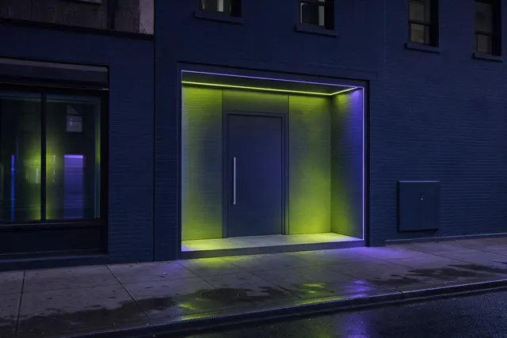

L train + walk2.2 mi north
Bedford Avenue Corridor
Williamsburg's main street. Restaurants, vintage shops, record stores, and galleries stretching from the waterfront to McCarren Park.
You must be at least 21 years of age to view this site. Please verify your age to continue.
You must be 21 or older to enter this site.
Licensed by NY Office of Cannabis Management · Adult-Use Retail · 994 Atlantic Ave, Brooklyn, NY 11238 · Adults 21+ Only
Walk-in · Open daily10:00 AM – 10:00 PM
Browse the MenuService Radius / Williamsburg
Williamsburg is Brooklyn's creative heartbeat -- young professionals, artists, and musicians shaping the borough's cultural edge. Take N' Toke at 994 Atlantic Avenue is a quick L train ride from Bedford Avenue, serving the neighborhood that never stops creating.
Neighborhood Profile
Williamsburg sits along the East River waterfront in northern Brooklyn, defined by its creative energy and the L train that connects it to Manhattan and the rest of Brooklyn. The neighborhood attracts a young demographic -- ages 22 to 40 -- drawn to its music venues, galleries, independent coffee shops, and a dining scene that ranges from Michelin-recognized to dollar-slice.
Bedford Avenue is the main artery, lined with vintage shops, record stores, tattoo parlors, and some of Brooklyn's most celebrated restaurants. The East River waterfront, including Domino Park and the Williamsburg waterfront esplanade, offers Manhattan skyline views and summer programming.
From the Brooklyn Brewery to the Music Hall of Williamsburg, this neighborhood runs on culture. Take N' Toke is a straight shot on the L train -- about 12-15 minutes from Bedford Avenue to our door at 994 Atlantic Avenue.
Key Landmarks
The venues, waterfront spaces, and cultural landmarks that define Williamsburg -- all connected to Take N' Toke via the L train.
Williamsburg's main street. Restaurants, vintage shops, record stores, and galleries stretching from the waterfront to McCarren Park.
Domino Park, the Williamsburg waterfront, and East River State Park. Manhattan skyline views and summer events.
Iconic craft brewery on N 11th Street. Tasting room, tours, and events in the heart of Williamsburg.
Premier live music venue on N 6th Street. Intimate setting hosting national and international acts nightly.
Commercial Corridors
The spine of Williamsburg. Brunch spots, boutiques, tattoo parlors, coffee shops, and galleries from N 12th to Metropolitan Ave.
Nightlife and music corridor near the waterfront. Bars, live venues, and late-night eats.
South Williamsburg's commercial artery. Diverse food scene, hardware stores, and neighborhood staples bridging cultures.
Transit Access
Williamsburg to Take N' Toke is a quick ride. The L train connects to Atlantic Ave-Barclays Center in about 10 minutes, and we're a 2-minute walk from there.
Product Highlights
Whether you're headed to a show, a gallery opening, or just unwinding on the waterfront, we have something for the moment.
Curated strains from NY-licensed growers. Sativa-forward options popular with the creative crowd.
Precision-dosed gummies, chocolates, and beverages. Great for social events and gallery nights.
Ready to smoke. Singles and multi-packs for sharing at rooftop hangs and park sessions.
Discreet cartridges and disposables. Portable, convenient, and available in multiple profiles.
FAQ
The fastest route is the L train from Bedford Avenue to Atlantic Ave-Barclays Center (about 10 minutes), then a 2-3 minute walk east to 994 Atlantic Avenue. Total trip is approximately 12-15 minutes. You can also walk -- it's 2.2-3.5 miles depending on your starting point, roughly 45-50 minutes.
Take N' Toke at 994 Atlantic Avenue is one of the most accessible licensed dispensaries for Williamsburg residents. The L train to Atlantic Ave makes it a quick, direct trip without transfers. We're worth the ride.
Our Williamsburg visitors tend to explore our full range. Vapes and pre-rolls are popular for convenience, while our flower selection appeals to experienced consumers. Edibles with precise dosing are a hit for social gatherings. Our staff can help match products to your preferences.
Check our current hours on the contact page. We aim to serve the community during convenient hours. If you're heading out in Williamsburg, consider stopping by on your way -- the L train makes it easy.
We accept cash and debit cards. An ATM is available on-site. All prices include applicable taxes as required by New York State.
Nearby Neighborhoods
Related

First-Time Dispensary VisitWhat to bring and what to expect at the counter.Read the guide